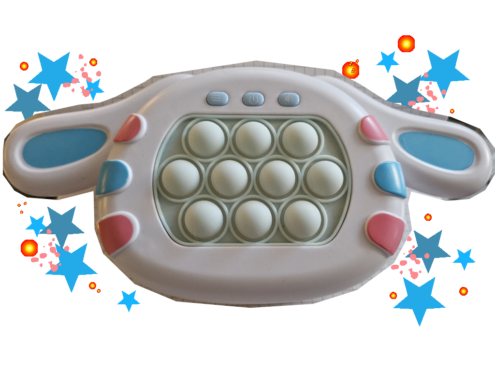
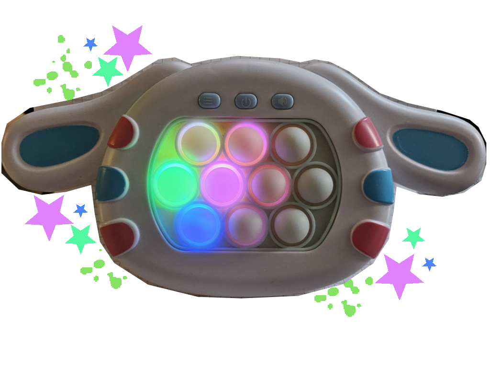
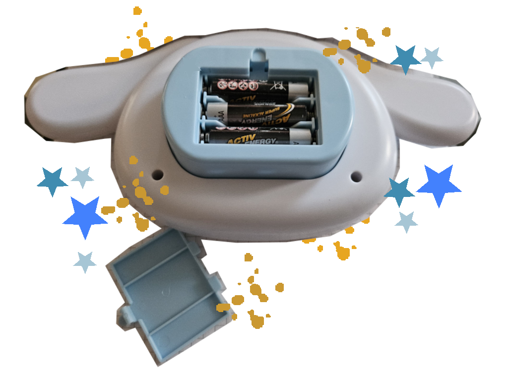

¡Pop It Electronico con diferentes modos de juego!
Juguete super divertido y dinámico, que te entretendrá por horas, fácil de utilizar y llevar a todas partes.Este dispositivo innovador combina la diversión de un juego con la ventaja de ser una herramienta multisensorial que promueve la destreza, coordinación, atención y memoria.

Funciona con tres baterías doble AA, lo que permite llevarlo y disfrutar del juego en cualquier lugar sin depender de cables o enchufes. Ideal para viajes, salidas o momentos de entretenimiento fuera de casa.

El juguete ofrece tres modos de juego distintos:
Modo de Protección: La máquina de juego Pop está fabricada con material ABS de alta calidad, no tóxico y agradable al tacto. Su diseño ergonómico y ligero permite jugar durante largos periodos sin causar molestias en las manos. Es ideal para llevar a cualquier parte y disfrutar del juego en todo momento.
Modo Divertido: Tiene 4 modos de juego divertidos, cada modo tiene diferentes niveles de dificultad, ayuda a ejercer tu velocidad de reacción y memoria. Lucharás contra el aburrimiento y disfrutarás del juego.
Modo de Entrenamiento: Durante los juegos, las luces y sonidos requieren concentración, pensamiento rápido y buena coordinación entre ojos y manos. Esto ayuda a los niños a desarrollar habilidades como la reacción, la memoria y el pensamiento lógico, mientras se divierten. También es útil para que los adultos liberen el estrés del día a día o del trabajo.

¡SOLO AL PRECIO DE 25 DOLARES!